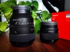

symskz2023-08-08 09:124.67 分
操作性 5.00耐用性 4.50性价比 3.50解像力 5.00色彩还原 5.00机械结构 5.00
WuMingZwyo2023-03-03 20:294.83 分
操作性 5.00耐用性 4.00性价比 5.00解像力 5.00色彩还原 5.00机械结构 5.00
cybertron2022-10-20 03:434.83 分
操作性 5.00耐用性 5.00性价比 4.00解像力 5.00色彩还原 5.00机械结构 5.00
Jian2022-07-28 07:385 分
操作性 5.00耐用性 5.00性价比 5.00解像力 5.00色彩还原 5.00机械结构 5.00
rica2022-04-09 14:435 分
操作性 5.00耐用性 5.00性价比 5.00解像力 5.00色彩还原 5.00机械结构 5.00
130818812842022-02-07 10:314.75 分
操作性 5.00耐用性 5.00性价比 4.00解像力 5.00色彩还原 4.50机械结构 5.00
liuxbc2022-01-22 16:544.75 分
操作性 5.00耐用性 5.00性价比 3.50解像力 5.00色彩还原 5.00机械结构 5.00

鱼不语2332021-09-01 09:515 分
操作性 5.00耐用性 5.00性价比 5.00解像力 5.00色彩还原 5.00机械结构 5.00
莫飞2021-06-03 22:554.75 分
操作性 5.00耐用性 5.00性价比 4.00解像力 4.50色彩还原 5.00机械结构 5.00